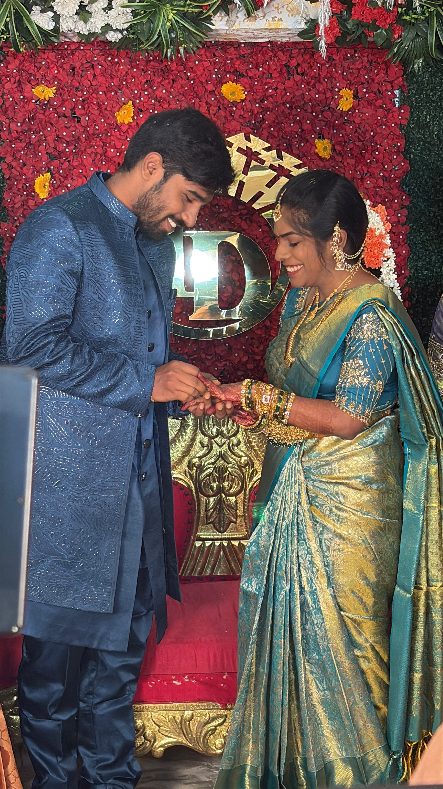

01
chapter oneBefore I knew
Before I knew
what was missing.
There was a version of my life before you. It was good, I’m sure. I just didn’t know it could be this bright.
the beginning
a collection of beginnings
The dates may be small, but every one of them changed my whole world.
There was a version of my life before you. It was good, I’m sure. I just didn’t know it could be this bright.
Somehow, a conversation became a habit, a habit became a home, and home started looking a lot like your smile.
Now there is a ring, a promise, and a thousand ordinary days I cannot wait to share with you. This first birthday after our engagement feels like the beginning of our favourite chapter.

drop a story photo hereone day, we’ll look back at all this and say:
“look how lucky we were.”